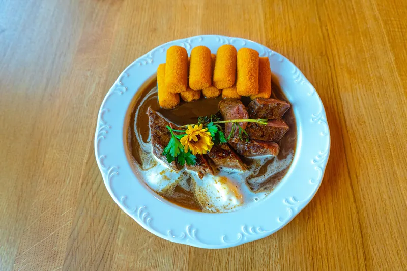
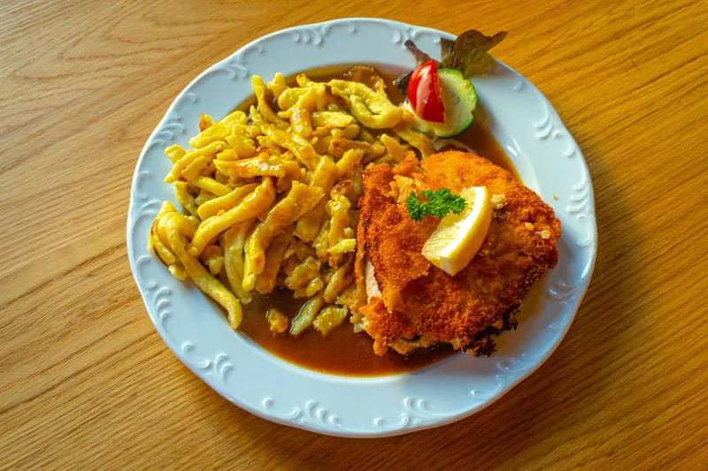
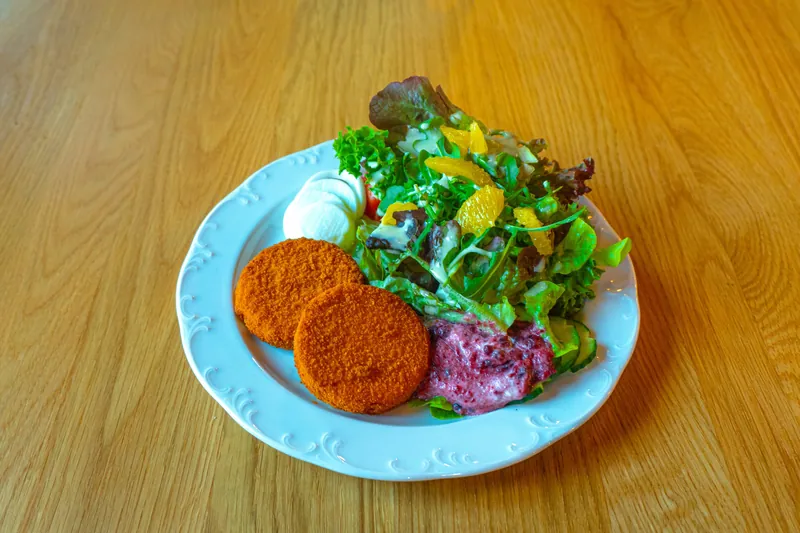
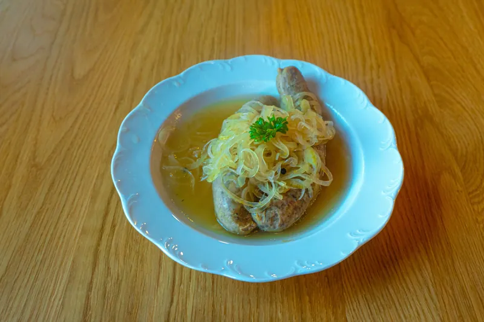

Obermögersheim · Wassertrüdingen
Herzlich willkommen im Gasthaus Gebert
Genießen. Feiern. Zusammenkommen.
Willkommen
Schön, dass Sie da sind
Ehrliches Essen, Zeit miteinander und Gastfreundschaft, die persönlich bleibt.
Was Sie bei uns finden
Unsere Angebote
Gasthaus & Gastronomie
Das Herzstück: essen, ankommen, sitzen bleiben.
Mehr dazuFamilienfeiern & Veranstaltungen
Geburtstage, Feste und Jubiläen im Haus.
Mehr dazuEigene Wurstwaren
Handwerk aus eigener Herstellung.
Mehr dazuCatering
Essen für Feiern außer Haus.
Mehr dazuKegelbahn
Kegeln im Haus, zusammen mit Essen und Feiern.
Mehr dazuAus der Küche
Kulinarische Highlights




Das Besondere
Aus eigener Herstellung
Wurstwaren aus eigener Herstellung gehören zum Haus.
Zusammenkommen
Feiern im Gasthaus Gebert
Familien, Vereine und Betriebe sind eingeladen – im Haus oder mit Essen außer Haus.
Gäste
Stimmen unserer Gäste
4,7 von 5 - 37 Google-Bewertungen (Stand 11/2026)
-
„Mega leckeres Essen – geschmacklich top! Die Bedienung war super nett, und es ist wirklich für jeden etwas dabei, ob mit Fleisch oder vegetarisch. Der Nachtisch, besonders die Mousse au Chocolat, ist einfach himmlisch! Absolut empfehlenswert!“
-
„Wir waren zur Tauffeier im Gasthaus. Das Essen war hervorragend und alle Gäste waren begeistert. Der Service war sehr freundlich und aufmerksam, sodass wir uns rundum wohlgefühlt haben. Vielen Dank für die tolle Bewirtung – wir kommen gerne wieder!“
-
„Ein familiengeführter, typisch fränkischer Gasthaus, wie man ihn heute nur noch selten findet. Die Küche ist ausgezeichnet – ehrlich, bodenständig und extrem lecker. … Ein besonderer Pluspunkt: Der Inhaber ist gleichzeitig Metzger. … Klare Empfehlung – unbedingt besuchen.“
-
„So freundlich wurde ich selten empfangen wie hier. Das Essen war wirklich lecker und der Service war weit über meinen Erwartungen. So viel Freundlichkeit ist man gar nicht mehr gewöhnt! Komme gerne wieder“
-
„Sehr gutes Essen (auch für Vegetarier) und freundlicher Service! Wir waren sehr zufrieden und kommen bestimmt wieder.“
-
„Sehr leckeres Essen und super Service. Wir kommen gerne wieder.“
-
„Sehr nettes Personal, prima Bananen-Sahne-Torte, gutbürgerliches Gasthaus, zivile Preise, Parkplätze vorm Haus, saubere WC-Anlagen. Kommen gerne wieder.“
Besuch
Kontakt und Anfahrt
Öffnungszeiten
Auf ein Wiedersehen
Kommen Sie vorbei
Ob Essen, Familienfeier oder Kegelabend – wir freuen uns auf Sie.